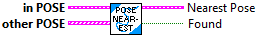
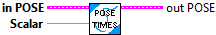
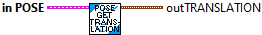

Divide the pose by the given scalar"
Parameters:
- IN POSE - The input POSE data structure
- Scalar - The value to divide the pose by.
Return:
- OUT POSE - The output pose.

Checks equality between this Pose2d and another Pose2d.
Parameters:
- this Pose - This POSE2D data structure
- other POSE - The other POSE2d data structure
Returns:
- Equals - Value will be TRUE if both POSEs are the same

Obtain a new Pose2d from a (constant curvature) velocity.
See Controls Engineering in the FIRST Robotics Competition section on nonlinear pose estimation for derivation.
The twist is a change in pose in the robot's coordinate frame since the previous pose update. When the user runs exp() on the previous known field-relative pose with the argument being the twist, the user will receive the new field-relative pose.
"Exp" represents the pose exponential, which is solving a differential equation moving the pose forward in time.
PARAMETERS:
--------------
- POSE - current POSE data structure
- TWIST - The change in pose in the robot's coordinate frame since the previous pose update. For example, if a non-holonomic robot moves forward 0.01 meters and changes angle by 0.5 degrees since the previous pose update, the twist would be Twist2d{0.01, 0.0, toRadians(0.5)}
RETURNS:
-----------
- OUT POSE - The new pose of the robot.

Interpolate between 2 poses
Parameter:
- IN POSE - Current POSE data structure
- EndValue POSE -- The end value POSE..
- T -- Value between 0 and 1.
Returns:
- Interpolated POSE - The interpolated POSE.

Returns a Twist2d that maps this pose to the end pose. If c is the output of a.Log(b), then a.Exp(c) would yield b.
Parmeters:
- IN POSE - The current POSE data structure
- OTHER POSE - The end pose for the transformation.
Returns:
- OUT TWIST - The twist that maps this to end.

Returns the Transform2d that maps the one pose to another.
Parameter:
- IN POSE - Current POSE data structure
- OTHER POSE - The initial pose of the transformation.
Returns:
- OUT TRANSFORMATION - The transform that maps the other pose to the current pose.

Returns the Transform2d that maps the one pose to another.
Parameter:
- IN POSE - Current POSE data structure
- OTHER POSE - The initial pose of the transformation.
Returns:
- OUT TRANSFORMATION - The transform that maps the other pose to the current pose.

Convenience constructors that takes in x and y values directly instead of having to construct a Translation2d.
Parameters:
- X- The x component of the translational component of the pose.
- Y - The y component of the translational component of the pose.
- Rotation (Heading) - The rotational component of the pose.
Returns:
- OUT POSE - Output POSE

Constructs a pose with the specified translation and rotation.
Parameters:
- translation - The translational component of the pose.
- rotation - The rotational component of the pose.
Return:
- POSE - Pose data structure

Transforms the pose by the given transformation and returns the new transformed pose. "plus" is the same as "transformBy"
The matrix multiplication is as follows
[x_new] [cos, -sin, 0][transform.x]
[y_new] += [sin, cos, 0][transform.y]
[t_new] [0, 0, 1][transform.t]
Parameters:
- IN POSE - The input POSE data structure
- OTHER TRANSFORM - The transform to transform the pose by.
Return:
- OUT POSE - The transformed pose.

Returns the other pose relative to the current pose.
This function can often be used for trajectory tracking or pose stabilization algorithms to get the error between the reference and the current pose.
Parameters:
- IN POSE - The POSE data structure
- OTHER POSE - The pose that is the origin of the new coordinate frame that the current pose will be converted into.
Return:
- OUT POSE - The current pose relative to the new origin pose.

Multiply the pose by the given scalar"
Parameters:
- IN POSE - The input POSE data structure
- Scalar - The value to multiply the pose by.
Return:
- OUT POSE - The output pose.

Transforms the pose by the given transformation and returns the new transformed pose. "plus" is the same as "transformBy"
The matrix multiplication is as follows
[x_new] [cos, -sin, 0][transform.x]
[y_new] += [sin, cos, 0][transform.y]
[t_new] [0, 0, 1][transform.t]
Parameters:
- IN POSE - The input POSE data structure
- OTHER TRANSFORM - The transform to transform the pose by.
Return:
- OUT POSE - The transformed pose.

Returns the rotational component of the transformation.
Parmeters:
- IN POSE -- Input POSE data structure
RETURNS:
- out ROTATION - The rotational component of the pose.

Returns the translation component of the transformation.
Parmeters:
- IN POSE - The POSE data structure
RETURNS:
- OUT TRANSLATION - The translational component of the pose.

Returns the X, Y elements of the translation component of the transformation.
Parmeters:
- IN POSE - The POSE data structure
RETURNS:
- X - The X element of the translational component of the pose.
- Y - The Y element of the translational component of the pose.

Returns the X, Y, Angle components of the pose.
Parmeters:
- IN POSE - The POSE data structure
RETURNS:
- X - X translation value
- Y - Y translation value
- Rotataion angle value